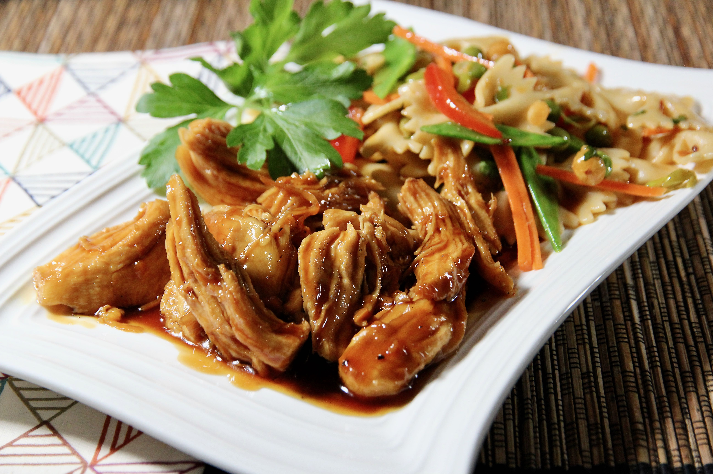

Teriyaki Chicken

Description
This dish is cooked from frozen chicken breast.
Teriyaki chicken has a rich sweetness and saltiness with a little bit of tang.
Easy for weekday dinners where you're short on time.
Ingredients:
- 1/2 cup soy sauce
- 1/2 cup water
- 1/2 cup brown sugar
- 2 tablespoon mirin (Japanese sweet wine)
- 1 tablespoon sake
- 1 tablespoon minced garlic
- 1 dash freshly cracked bell pepper
- 1 pound skinless, boneless chicken breast halves
Steps:
- Mix soy sauce, water, brown sugar, rice wine vinegar, mirin, sake, garlic, and pepper in a bowl to
make a sauce.
- Place chicken in an electric pressure cooker. Pour sauce over chicken. Close
and lock the lid. Select Meat function; set timer for 12 minutes. Allow 10 to 15 minutes for pressure to
build.
- Release pressure carefully using the quick-release method according to manufacturer's instructions,
about 5 minutes. Unlock and remove lid. An instant-read thermometer inserted into the center of the chicken
should read at least 165 degrees F (74 degrees C); if not, cook chicken for another 2 to 4 minutes.
- Remove chicken from the pot and cut up or shred. Mix with the sauce from the pot.